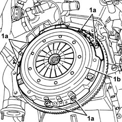
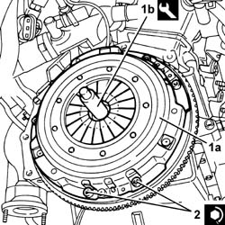

1810A28 clutch - r r for manual gearbox with hydraulic selection versions
- Path
- Procedures > 18 CLUTCH > 1810 CLUTCH MECHANISMS > 1810A clutch mechanism > 1810A28 clutch - r r for manual gearbox with hydraulic selection versions
- Kind
- repair procedure (removal / refitting; the operation number is the code)
- Applies to
- all engines; all production periods
- Interactive page
- https://sloeber94.github.io/elrnDB-a156/en/#/3237893
Applies to: all engines; all production periods; only with equipment: Smart gearbox
 Removing
Removing
 Refitting
Refitting5530B52 Battery DRIP TRAY/SUPPORT - R.R. .
2127C40 hydraulic speed selection hydraulic actuator unit and clutch - r r .
4450B12 front or rear wheels (two) - r+r .
7055B54 under-engine guard - r r .
7055A43 central front grille - r r .
7055A41 RIGHT FRONT GRILLE - R.R. .
1076B50 exhaust pipe attachment to engine - r + r .
1076A32 exhaust rigid mount - r r ..
1008A44 rear rigid mount - r r .
1008B20 power unit intermediate mount flexible block - replace .
2110A11 manual gearbox with differential - r r for versions with hydraulic selection .
1. Undo the bolts (1a) and remove the pressure plate (1b) and the clutch disc.

Applies to: all engines; all production periods; only with equipment: Smart gearbox
Refitting
Removing1. Fit the clutch disc and the pressure plate (1a) using the centering tool (1b).
 | Name | Country |
|---|---|---|
1b | Clutch centering | 1.870.447.000 |
2. Tighten the bolts fixing the pressure plate to the engine flywheel to the recommended torque.
 | Fastening | Component | Ø | Value (daNm) |
|---|---|---|---|---|
2 | Bolt | CLUTCH PRESSURE PLATE | M8 | (Engine flywheel side) 2.6 - 3.0 |

Applies to: all engines; all production periods; only with equipment: Smart gearbox
Remove the centring tool.
| Name | Country |
|---|---|---|
- | Clutch centering | 1.870.447.000 |
2110A11 manual gearbox with differential - r r for versions with hydraulic selection .
1008B20 power unit intermediate mount flexible block - replace .
1008A44 rear rigid mount - r r .
1076A32 exhaust rigid mount - r r .
1076B50 exhaust pipe attachment to engine - r + r .
7055A41 RIGHT FRONT GRILLE - R.R. .
7055A43 central front grille - r r .
7055B54 under-engine guard - r r .
4450B12 front or rear wheels (two) - r+r .
2127C40 hydraulic speed selection hydraulic actuator unit and clutch - r r .
2127C06 Electro-hydraulic selection manual gearbox HYDRAULIC SYSTEM - Bleeding air .
Applies to: engines: 2.0 JTS, 2.0 JTS; all production periods; only with equipment: Smart gearbox
Removing
RefittingPosition the vehicle on the ramp.
Proceed with removal 5530B10 battery - r+r .
Proceed with removal 5530B52 Battery DRIP TRAY/SUPPORT - R.R. .
Proceed with removal 4450B12 front or rear wheels (two) - r+r .
Proceed with removal - 7055B90 Left front WHEEL ARCH LINER - R.R. .
Proceed with removal 7055B54 under-engine guard - r r .
Proceed with removal 2127C40 hydraulic speed selection hydraulic actuator unit and clutch - r r .
Proceed with removal 7055A43 central front grille - r r .
Proceed with removal 7055A41 RIGHT FRONT GRILLE - R.R. .
Proceed with removal 7055B10 Front BUMPER - R.R. .
Proceed with removal 5040A20 air conditioner compressor - r+r - includes fluid level check and top up if necessary .
Proceed with removal 5040A26 compressor mount - r r .
Proceed with removal 1076A48 catalytic converter heat shield - r r .
Proceed with removal 1080B62 catalytic converter - r + r .
Proceed with removal 2110A11 manual gearbox with differential - r r for versions with hydraulic selection .
Proceed with removal 1810A24 clutch - r + r with gearbox removed .
Applies to: engines: 2.0 JTS, 2.0 JTS; all production periods; only with equipment: Smart gearbox
Refitting
RemovingProceed with refitting 1810A24 clutch - r + r with gearbox removed .
Proceed with refitting 2110A11 manual gearbox with differential - r r for versions with hydraulic selection .
Proceed with refitting 1080B62 catalytic converter - r + r .
Proceed with refitting 1076A48 catalytic converter heat shield - r r .
Proceed with refitting 5040A26 compressor mount - r r .
Proceed with refitting 5040A20 air conditioner compressor - r+r - includes fluid level check and top up if necessary .
Refill the gearbox/differential using the recommended fluid 0010T40 hydraulic system fluid for gearbox with hydraulic selection check level and top up if necessary .
Proceed with refitting 7055B10 Front BUMPER - R.R. .
Proceed with refitting 7055A41 RIGHT FRONT GRILLE - R.R. .
Proceed with refitting 7055A43 central front grille - r r .
Proceed with refitting 2127C40 hydraulic speed selection hydraulic actuator unit and clutch - r r .
Proceed with refitting 2127C04 ELECTROHYDRAULIC selection gearbox hydraulic system FLUID - Check level and top up if necessary. .
Proceed with refitting 2127C06 Electro-hydraulic selection manual gearbox HYDRAULIC SYSTEM - Bleeding air .
Proceed with refitting 7055B54 under-engine guard - r r .
Proceed with refitting - 7055B90 Left front WHEEL ARCH LINER - R.R. .
Proceed with refitting 4450B12 front or rear wheels (two) - r+r .
Proceed with refitting 5530B52 Battery DRIP TRAY/SUPPORT - R.R. .
Proceed with refitting 5530B10 battery - r+r .
Fill the air conditioner coolant circuit 5040A10 Air conditioning refrigerant CIRCUIT - Draining and Refilling .
Remove the car from the ramps.
Applies to: engines: 3.2 V6; all production periods; only with equipment: Smart gearbox
Removing
RefittingProceed with removal 5530B10 battery - r+r .
Proceed with removal 5530B52 Battery DRIP TRAY/SUPPORT - R.R. .
Proceed with removal 1048A10 air cleaner filtering element - replace .
Proceed with removal 7055B54 under-engine guard - r r .
Proceed with removal 2127C40 hydraulic speed selection hydraulic actuator unit and clutch - r r .
Proceed with removal 2127C48 GEAR ENGAGEMENT ELECTRO-HYDRAULIC SELECTION DEVICE - R.R. .
Proceed with removal 4450B12 front or rear wheels (two) - r+r .
Proceed with removal - 7055B90 Left front WHEEL ARCH LINER - R.R. .
Proceed with removal 7055A43 central front grille - r r .
Proceed with removal 7055A41 RIGHT FRONT GRILLE - R.R. .
Proceed with removal 7210E10 R.R. FRONT BUMPER .
Proceed with the removal 5540B16 FRONT LIGHT CLUSTER with direction indicator (one), left or right - R.R. bearing in mind that it is not necessary to lower the front bumper because it has already been removed.
Proceed with removal 7025A34 bonnet lid lock (one) - r+r or repair .
Proceed with removal - 7090G06 HEADLAMP HOUSING CONNECTING CROSSMEMBER - Replace. .
Proceed with removal 1088E11 fans with single engine duct - r+r .
Proceed with removal 1008C10 power unit upper reaction link r r .
Proceed with removal 1076B82 left exhasust pipe between catalytic preconverter and converter r r .
Proceed with removal 1076B84 right exhaust pipe between caralytic preconverter and converter r r .
Proceed with removal 1008A42 gear box left rigid mount - r r .
Proceed with removal 1008A44 rear rigid mount - r r .
Proceed with removal 2110A11 manual gearbox with differential - r r for versions with hydraulic selection .
Proceed with removal 1810A24 clutch - r + r with gearbox removed .
Applies to: engines: 3.2 V6; all production periods; only with equipment: Smart gearbox
Refitting
RemovingProceed with refitting 1810A24 clutch - r + r with gearbox removed .
Proceed with refitting 2110A11 manual gearbox with differential - r r for versions with hydraulic selection .
Proceed with refitting 1008A44 rear rigid mount - r r .
Proceed with refitting 1008A42 gear box left rigid mount - r r .
Proceed with refitting 1076B84 right exhaust pipe between caralytic preconverter and converter r r .
Proceed with refitting 1076B82 left exhasust pipe between catalytic preconverter and converter r r .
Proceed with refitting 1008C10 power unit upper reaction link r r .
Proceed with refitting 1088E11 fans with single engine duct - r+r .
Proceed with refitting - 7090G06 HEADLAMP HOUSING CONNECTING CROSSMEMBER - Replace. .
Proceed with refitting 7025A34 bonnet lid lock (one) - r+r or repair .
Proceed with refitting 5540B16 FRONT LIGHT CLUSTER with direction indicator (one), left or right - R.R. .
Proceed with refitting 7210E10 R.R. FRONT BUMPER .
Proceed with refitting 7055A41 RIGHT FRONT GRILLE - R.R. .
Proceed with refitting 7055A43 central front grille - r r .
Proceed with refitting - 7055B90 Left front WHEEL ARCH LINER - R.R. .
Proceed with refitting 4450B12 front or rear wheels (two) - r+r .
Refill the gearbox/differential using the recommended fluid 0010T40 hydraulic system fluid for gearbox with hydraulic selection check level and top up if necessary .
Proceed with refitting 2127C48 GEAR ENGAGEMENT ELECTRO-HYDRAULIC SELECTION DEVICE - R.R. .
Proceed with refitting 2127C40 hydraulic speed selection hydraulic actuator unit and clutch - r r .
Proceed with refitting 1048A10 air cleaner filtering element - replace .
Proceed with refitting - 0010T47 hydraulic system fluid for gearbox with hydraulic selection check level and top up if necessary .
Proceed with refitting - 0010T48 hydraulic system for gearbox with hydraulic selection bleed air .
Proceed with refitting 5530B52 Battery DRIP TRAY/SUPPORT - R.R. .
Proceed with refitting 5530B10 battery - r+r .
Proceed with refitting 7055B54 under-engine guard - r r .
Topics linked from this page (32)
- 0010T40 hydraulic system fluid for gearbox with hydraulic selection check level and top up if necessary
- 1008A42 gear box left rigid mount - r r
- 1008A44 rear rigid mount - r r
- 1008B20 power unit intermediate mount flexible block - replace
- 1008C10 power unit upper reaction link r r
- 1048A10 air cleaner filtering element - replace
- 1076A32 exhaust rigid mount - r r
- 1076A48 catalytic converter heat shield - r r
- 1076B50 exhaust pipe attachment to engine - r + r
- 1076B82 left exhasust pipe between catalytic preconverter and converter r r
- 1076B84 right exhaust pipe between caralytic preconverter and converter r r
- 1080B62 catalytic converter - r + r
- 1088E11 fans with single engine duct - r+r
- 1810A24 clutch - r + r with gearbox removed
- 2110A11 manual gearbox with differential - r r for versions with hydraulic selection
- 2127C04 ELECTROHYDRAULIC selection gearbox hydraulic system FLUID - Check level and top up if necessary.
- 2127C06 Electro-hydraulic selection manual gearbox HYDRAULIC SYSTEM - Bleeding air
- 2127C40 hydraulic speed selection hydraulic actuator unit and clutch - r r
- 2127C48 GEAR ENGAGEMENT ELECTRO-HYDRAULIC SELECTION DEVICE - R.R.
- 4450B12 front or rear wheels (two) - r+r
- 5040A10 Air conditioning refrigerant CIRCUIT - Draining and Refilling
- 5040A20 air conditioner compressor - r+r - includes fluid level check and top up if necessary
- 5040A26 compressor mount - r r
- 5530B10 battery - r+r
- 5530B52 Battery DRIP TRAY/SUPPORT - R.R.
- 5540B16 FRONT LIGHT CLUSTER with direction indicator (one), left or right - R.R.
- 7025A34 bonnet lid lock (one) - r+r or repair
- 7055A41 RIGHT FRONT GRILLE - R.R.
- 7055A43 central front grille - r r
- 7055B10 Front BUMPER - R.R.
- 7055B54 under-engine guard - r r
- 7210E10 R.R. FRONT BUMPER